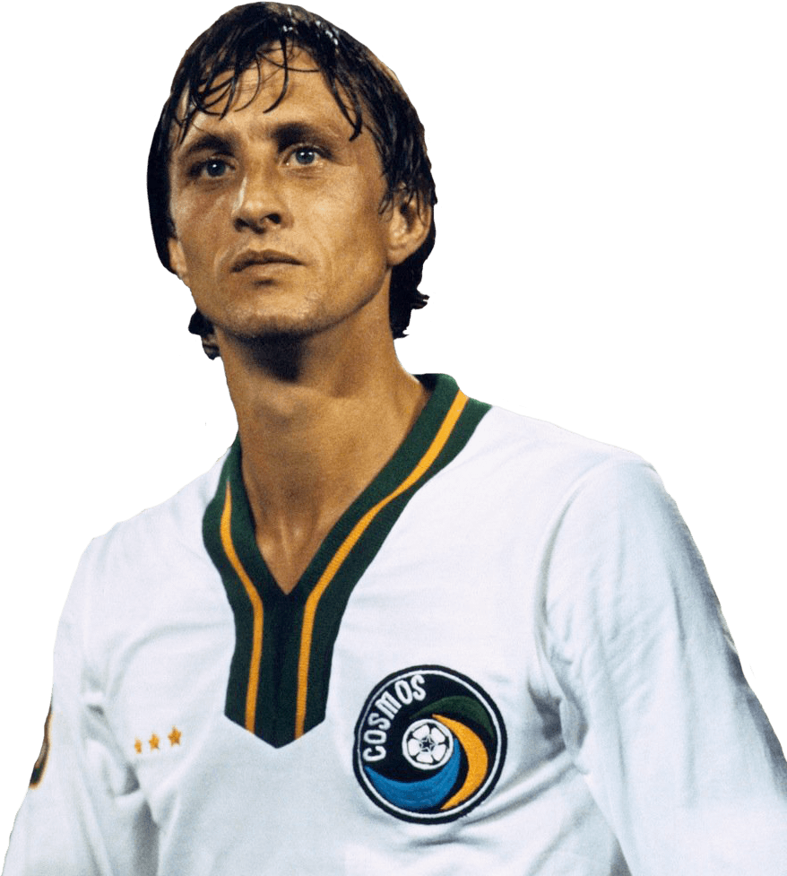

Johan Cruyff
Hendrik Johannes "Johan" Cruijff foi um treinador e futebolista neerlandês que atuou como atacante. É considerado pela IFFHS como o melhor futebolista europeu do século XX e um dos maiores jogadores da história do futebol.